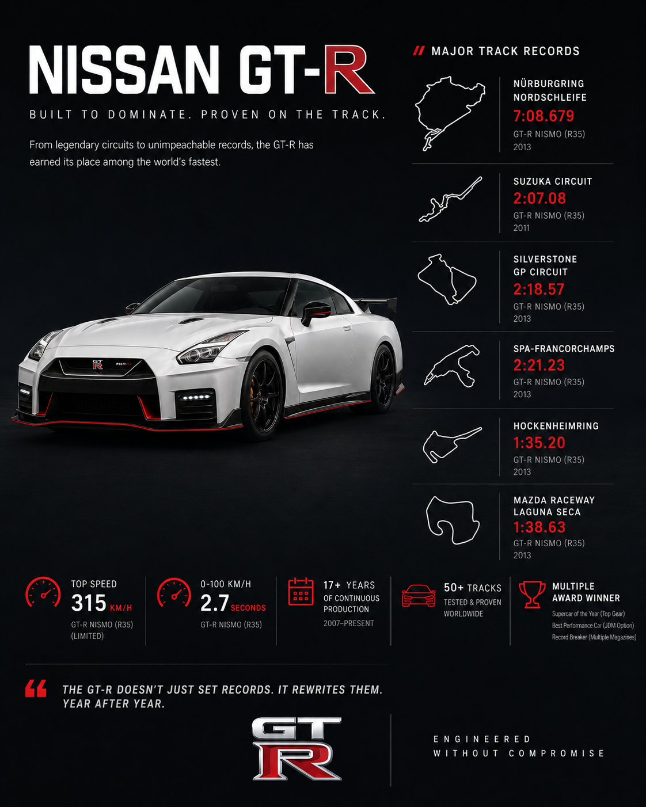

"If you're in control,
you're not going fast enough."
Heritage & Introduction
Built from racing obsession and street-car stubbornness, Nissan GT-R became a machine that made lap timers nervous. Four generations turned one badge into a global ICON for grip, boost, and impossible pace.

1989-1994
Godzilla.
The R32 Skyline GT-R arrived with the RB26DETT, ATTESA E-TS all-wheel drive, and a touring-car record so ruthless it became folklore.
- Engine
- RB26DETT I6
- Power
- 276 hp
- 0-60 mph
- 5.6 s
- JTCC
- 29/29 wins
1995-1998
The Refined Beast.
Wider, smoother, and more settled at speed, the R33 kept the RB26 heart while sharpening the chassis for high-speed endurance.
- Power
- 276 hp
- 0-60 mph
- 5.4 s
- Top Speed
- 156 mph
- Nurburgring
- Sub-8 min
1999-2002
The Icon.
The R34 fused a shorter, sharper body with the Multi-Function Display and ATTESA E-TS Pro. Video games, cinema, and tuning culture turned it into the poster car of an era.
- Power
- 276 hp
- Actual Output
- 330+ hp
- 0-60 mph
- 4.9 s
- Weight
- 1,560 kg
The GT-R's all-wheel-drive system made traction feel like strategy: power moving where the road could use it most.
2007-2025
The Supercar Killer.
The R35 dropped the Skyline name and kept the mission: hand-built VR38DETT power, brutal launch control, and lap times that ignored price hierarchy.
- Engine
- VR38DETT V6
- Power
- 565 hp
- 0-60 mph
- 2.5 s
- Top Speed
- 205 mph
Evolutionary Lineage
Skyline GT-R R32
RB26DETT, 276 hp, touring-car domination.
1995Skyline GT-R R33
Longer wheelbase, faster high-speed composure.
1999Skyline GT-R R34
Culture-defining shape, MFD, ATTESA E-TS Pro.
2007Nissan GT-R R35
VR38DETT and dual-clutch launch-control violence.
2025R35 Farewell
The end of an 18-year supercar-slaying production run.
The GT-R has always been about punching above its weight. It doesn't care about pedigree, only the lap time.
Motor Trend-inspired tribute quote

Forever boosted
Eternal Skyline.
The R34 GT-R is the poster car that never aged out: RB26, ATTESA, screen legend, street myth.
Explore the GT-R- R34
- Skyline GT-R
- RB26
- Twin-turbo I6
- 1999
- Icon era
Fan-made GT-R tribute by Vibhor. Not affiliated with or endorsed by Nissan. Trademarks, badges, car names, and 3D models belong to their respective owners and credited creators.